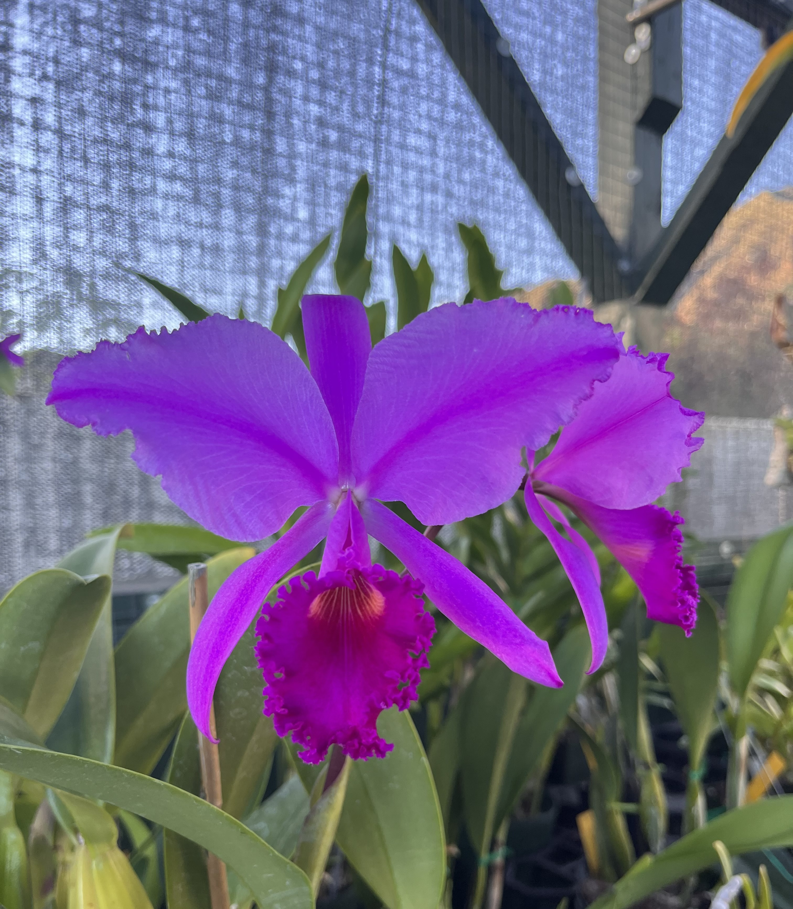
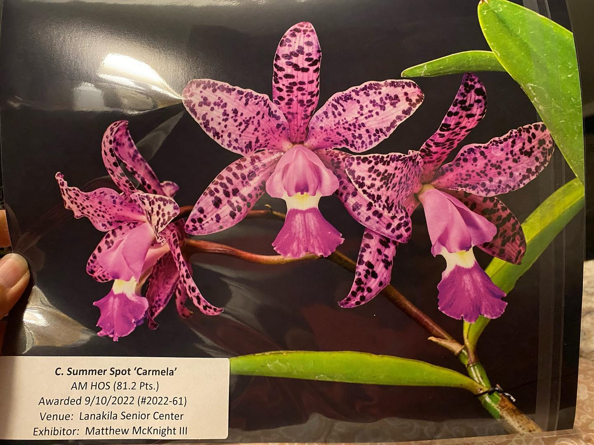

My Hobbies

(Cattleya. trianae 'Sangre de Toro')
Living on an island, I grew up learning to fish from my dad, brothers, and cousins. It's really satisfying being able to eat the food that I've caught myself.

(Paph. Maudiae 'My Love')
I really enjoy traveling to different states and countries to try food. The tonkatsu ramen at Ichiran Ramen in Tokyo was one of the best ramen I've had in my life.

(Cattleya. Summer Spot 'Carmela')
One thing I really enjoy is spending time with my nieces and nephews. It's really fulfilling to be an influence in their lives.